Anteriormente miramos la estructura de HTML y las etiquetas más básicas, ahora vamos a prender etiquetas para poner imágenes y enlaces en la pagina web que deseemos crear.
Para empezar con esta explicación voy a utilizar el editor de código de Microsoft Visual Studio Code, lo pueden descargar en el siguiente enlace: Microsoft Visual Studio Code
Ahora creare una página web básica can las etiquetas básicas anteriormente estudiadas en el tema uno.
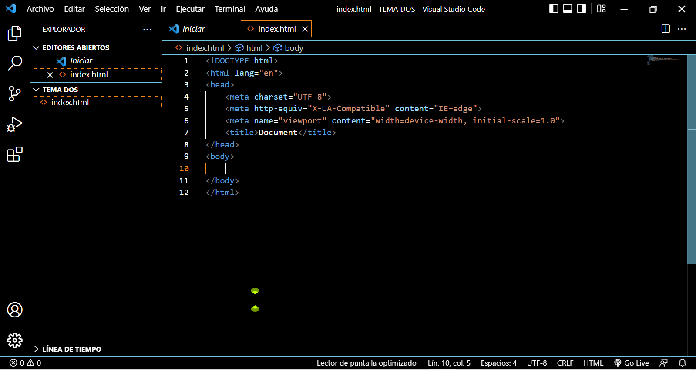Creare un título un párrafo y debajo del párrafo voy a poner una imagen. Para ello utilizare las etiquetas <h1>, <p> y para poner la imagen se utiliza la etiqueta <img> que en Microsoft Visual Studio Code, al digitar “img” y presionar intro automáticamente me crea la etiqueta completa para poner la ruta de la imagen y poder agregar el autor de la imagen y la etiqueta completa seria esta:
<img src=" " alt=" ">
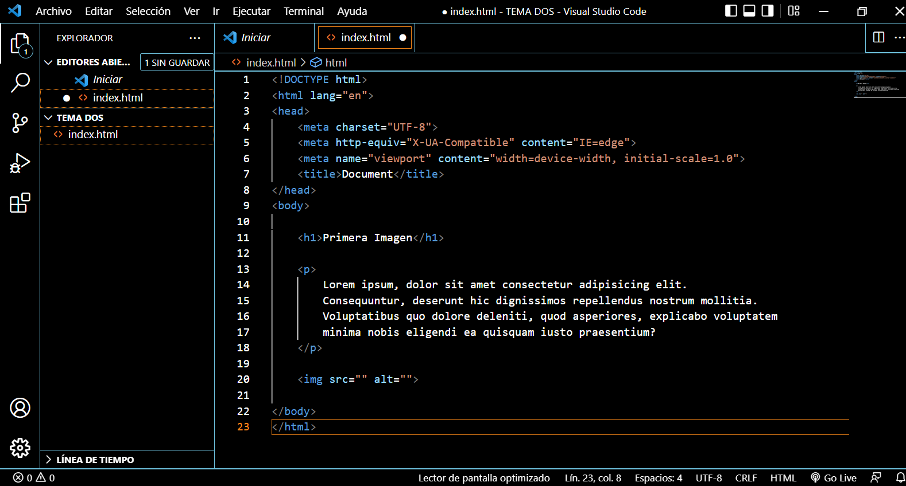Ahora para agregar una imagen primero tenemos que crear una carpeta y la llamaremos (img) y en ella agregaremos las imágenes que deseemos poner en la pagina web.
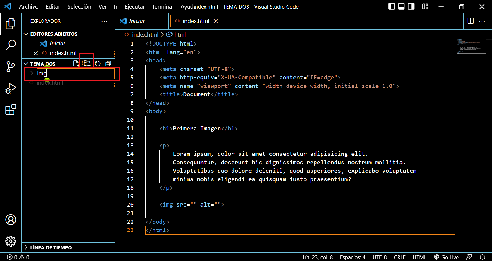Una vez creada la carpeta y agregada las imágenes. Dentro de las comillas src="" digitaremos “img” que es la ruta de nuestra carpeta de imágenes luego digitamos barra inclinada “/” para separar la carpeta y elegir la imagen que queremos poner en mi caso será imagen de (prueba.jpg), entonces la etiqueta queda esta manera:
<img src=”img/prueba.jpg” alt=”Pixa Bay”>
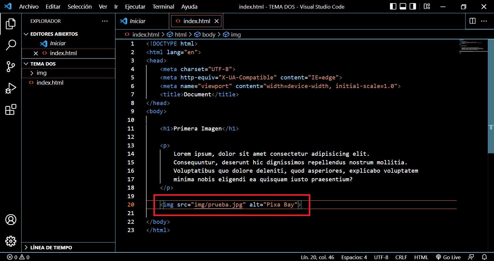Si seguimos todos los pasos anteriores el código HTML quedaría de la siguiente manera.
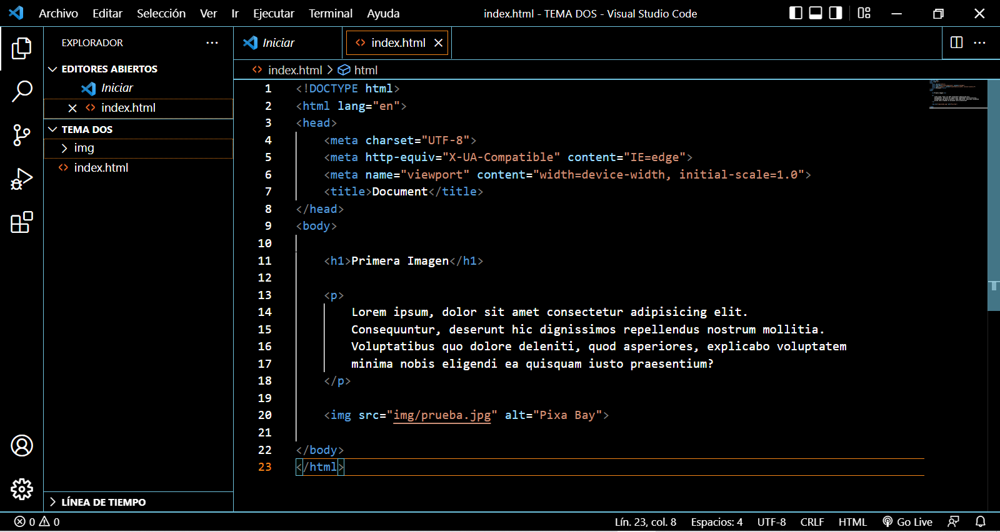Si todo esta bien procedemos abrir el archivo (.html) en el navegador de su preferencia y el resultado debería ser el mostrado en la imagen, claro que yo le he cambiado el alto y el ancho en el mismo código HTML, pero esto no se debe hacer ya que es una mala práctica de programación solamente lo hago para que se mire bien en el ejemplo.
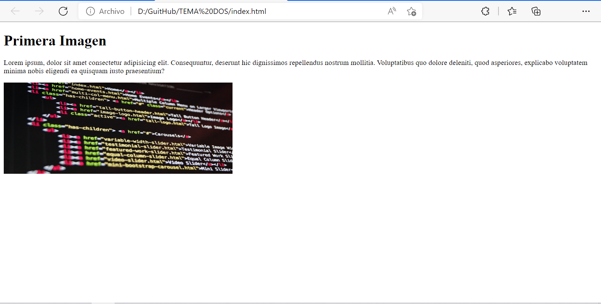Para agregar enlaces externos en la página web que estamos creando es fácil, solamente debemos utilizar la etiqueta <a></a>, en Visual Studio Code, automáticamente crea la etiqueta completa con todos los parámetros como (href="") donde dentro de las comillas debemos poner el enlace que deseemos, en mi caso será el de YouTube, antes del cierre de la etiqueta </a> debemos colocar el nombre que deseemos ya que al hacer clic en él nos llevará a la página del enlace.
La etiqueta debe quedar de la siguiente manera:
<a href="https://www.youtube.com/">este es un enlace</a>
Este enlace lo pondré debajo de la imagen que agregamos anteriormente y el código debería quedar de la siguiente manera:
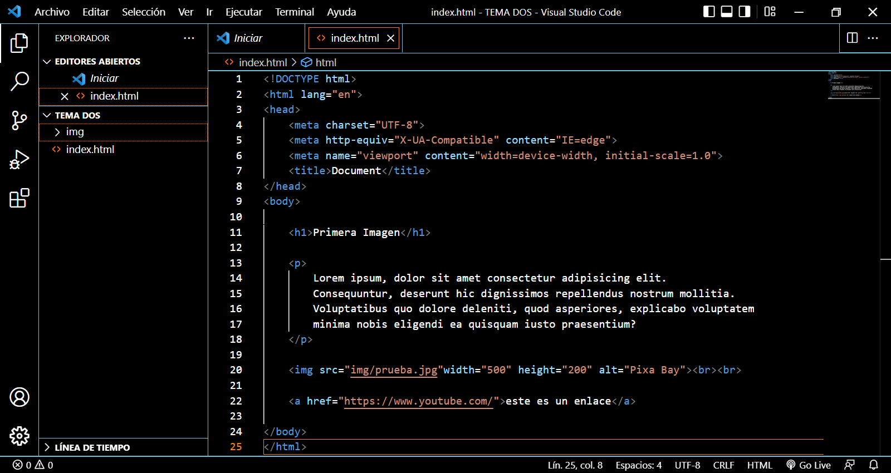Si todo está bien procedemos a refrescar el navegador donde abrieron su archivo (.html) y el resultado debería ser el mostrado en la imagen.
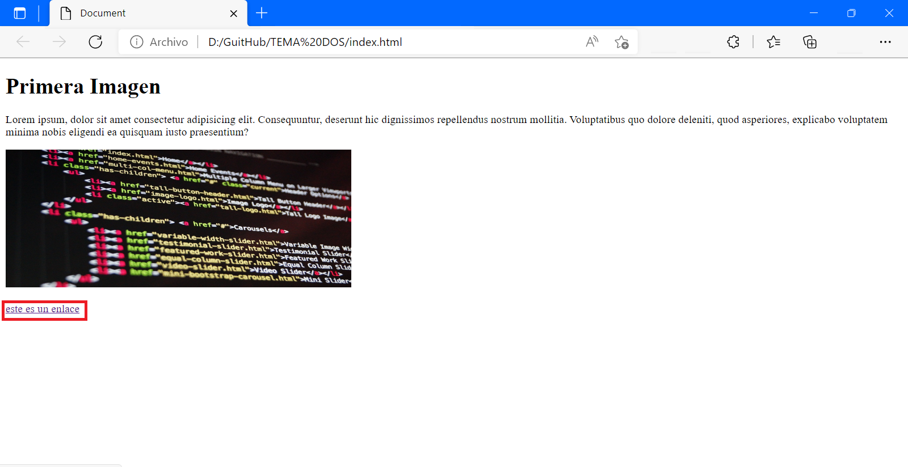Para agregar enlaces locales en la página web que estamos creando y deseamos crear otra página (.html) y queremos colocarla como un enlace , solamente debemos utilizar la etiqueta <a></a>, en Visual Studio Code, automáticamente crea la etiqueta completa con todos los parámetros como (“href="") donde dentro de las comillas debemos poner el enlace que deseemos, en mi caso creare un archivo (.html) diferente al que ya tenemos y le voy a poner de nombre (otrapagina.html), le pondré un título <h1> como Otra Página, luego lo enlazare en la etiqueta.
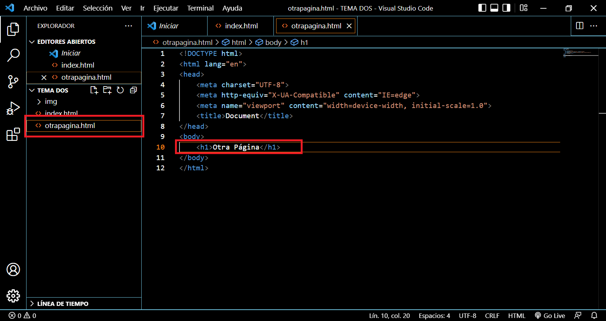antes del cierre de la etiqueta </a> debemos colocar el nombre que deseemos ya que al hacer clic en él nos llevará a la página del enlace.
La etiqueta debe quedar de la siguiente manera:
<a href="otrapagina.html”> este es un enlace a otra página</a>
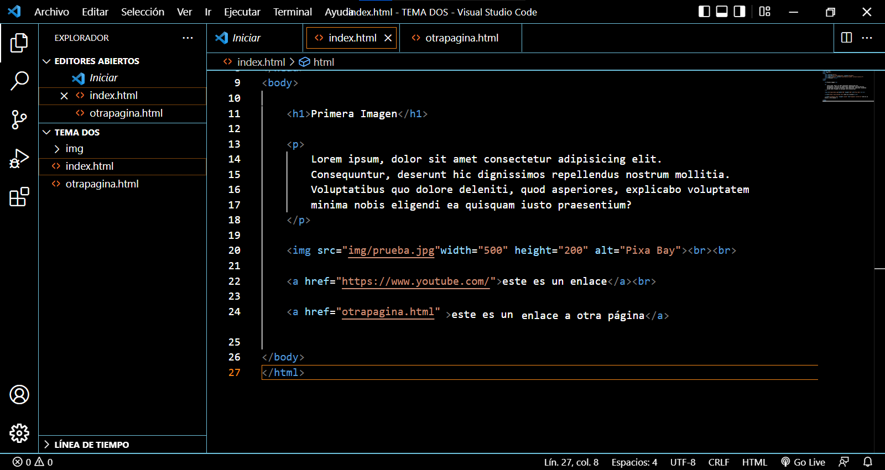al refrescar el navegador donde tenemos abierto nuestro archivo (index.html) el resultado es el mostrado en la imagen:
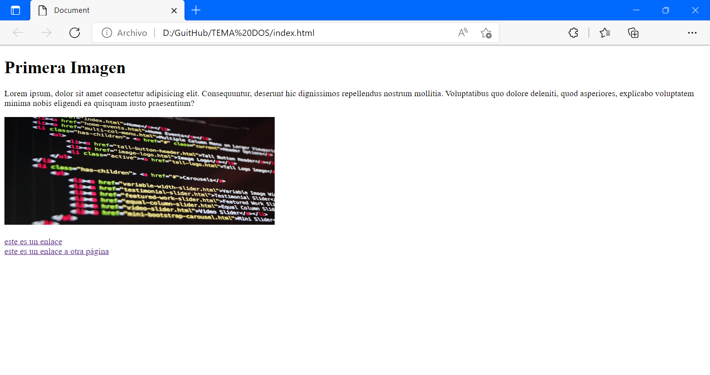Ahora bien, si queremos que al hacer clic en el enlace este se abra en una pestaña nueva en el navegador tendremos que colocar un atributo dentro de la etiqueta <a>, el atributo es (target="_blank"). El código completo de la etiqueta queda de la siguiente manera:
<a href="otrapagina.html" target="_blank">este es un enlace a otra página</a>
Es recomendable cuando utilizamos el atributo (target) siempre añadir (rel="noreferrer noopener") para prevenir el tipo de phishing conocido como tabnabbing. Nuestro código quedaría de la siguiente manera:
<a href="otrapagina.html" target="_blank" rel="noopener noreferrer">este es un enlace a otra página</a>
El resultado del código es el mostrado en la imagen:
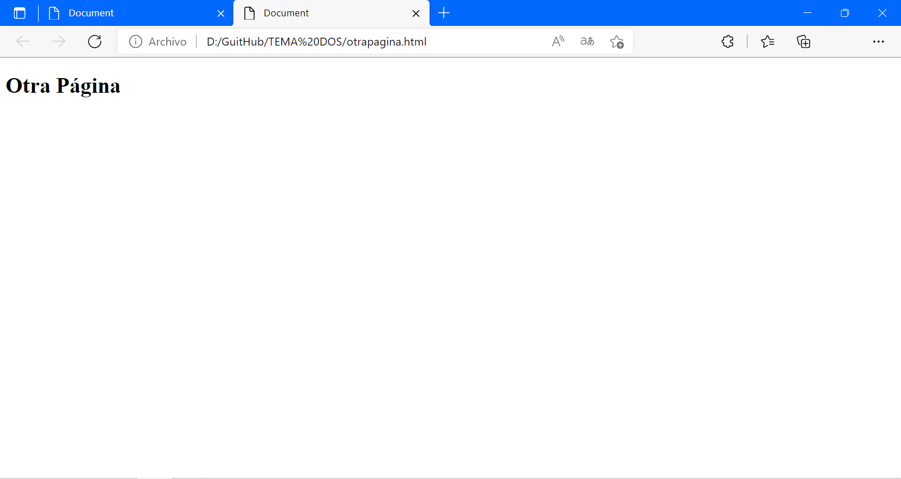